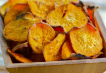
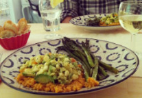
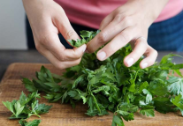
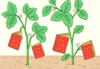

Share your Foor Sence
Submit yout favorite recipes, become a contributor, or get
interviewed.
-
TastemakersFeast your eyes & get reciepes!g
-
BlogNews, how-tos, stories, and more
-
The A-ListHandpicked, absolute favorites
-
ContributeWe want to hear from you!

2012’s Best Summer Cookbooks
With the best of the season coming from “orchards, farms and
gardens,” NPR has put together an impressive collection of 10
summer cookbooks.
May 23, 2012 /
Read...

How to Make Vegetable Chips
About a month ago, I ate almost an entire box of kale chips. My
brother and I were visiting our cousin in Brooklyn, and before a
very thoughtfully prepared vagan...
May 17, 2012 /
Read...

Join us on Pinterest!
If I could curate a cookbook for you, this would be it.
May 16, 2012 /
Read...

Recipes from a Sunday Supper
I could not figure out what to do with the delectable slices of
Pear Cake that I brought home from this wonderful Sunday supper
- eat them slowly, a little bit at...
May 17, 2012 /
Read...